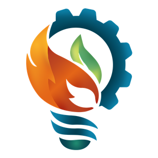
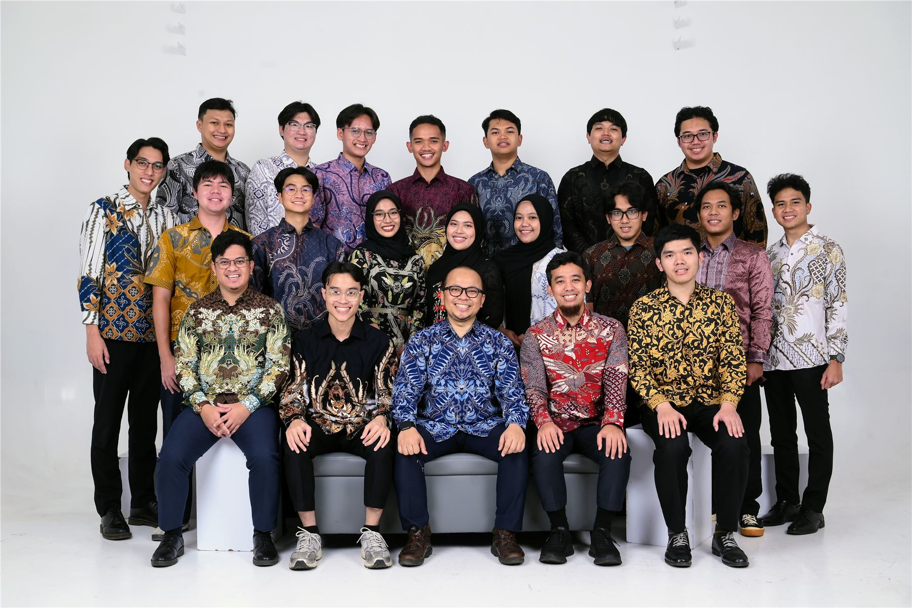

Engineering non-carbon fuels for thermal power generationMerekayasa bahan bakar non-karbon untuk pembangkit listrik termal火力発電のための非炭素燃料を工学する
From the flame front to the full power plant: we study how hydrogen, ammonia, biomass and bio-liquid fuels burn, how sustainable fuels are produced, how CO₂ is mineralized, and how thermal plants stay flexible during the energy transition.Dari ujung nyala hingga pembangkit utuh: kami meneliti bagaimana hidrogen, amonia, biomassa, dan bahan bakar cair nabati terbakar, bagaimana bahan bakar berkelanjutan diproduksi, bagaimana CO₂ dimineralisasi, dan bagaimana pembangkit termal tetap fleksibel selama transisi energi.火炎面から発電プラント全体まで。水素・アンモニア・バイオマス・バイオ液体燃料の燃焼、持続可能燃料の製造、CO₂の鉱物化、そしてエネルギー転換期における火力発電所の柔軟運用を研究しています。
Built around problems from the thermal and power generation sectorBerangkat dari permasalahan nyata sektor termal dan pembangkitan火力・発電分野の実課題から出発する研究
Our questions come from operating plants and fuel supply chains: how much ammonia a boiler can take, how hydrogen changes an engine, why ash fouls a furnace, how fast a coal unit can ramp. We take them into the lab, answer them with experiments and models, and take the results back to the field.Pertanyaan kami datang dari pembangkit yang beroperasi dan rantai pasok bahan bakar: berapa banyak amonia yang dapat diterima boiler, bagaimana hidrogen mengubah kinerja mesin, mengapa abu mengotori tungku, seberapa cepat unit batubara dapat menaikkan beban. Kami membawanya ke lab, menjawabnya dengan eksperimen dan model, lalu mengembalikan hasilnya ke lapangan.ボイラはどれだけアンモニアを受け入れられるか、水素はエンジンをどう変えるか、なぜ灰が炉を汚すのか、石炭ユニットはどれだけ速く負荷変化できるか。稼働中のプラントと燃料サプライチェーンから生まれた問いを実験とモデルで解き、成果を現場に還元します。
Every turbine, boiler and engine running today will have to burn something cleaner tomorrow.Setiap turbin, boiler, dan mesin yang beroperasi hari ini harus membakar sesuatu yang lebih bersih esok hari.今日動いているタービン・ボイラ・エンジンは、明日にはよりクリーンな燃料を燃やさなければならない。
Photo: Wikimedia Commons (CC0)A multidisciplinary hub for thermal energy decarbonizationPusat riset multidisiplin untuk dekarbonisasi energi termal熱エネルギー脱炭素化のための学際的拠点
The Energy and Thermochemistry (ETC) Laboratory is part of the Thermal Science and Engineering Research Group at the Faculty of Mechanical and Aerospace Engineering (FTMD), Institut Teknologi Bandung, led by Dr.Eng. Firman Bagja Juangsa. We bridge thermodynamics, fluid mechanics, chemical kinetics and materials.Laboratorium Energi dan Termokimia (ETC) merupakan bagian dari Kelompok Keahlian Ilmu dan Rekayasa Termal, Fakultas Teknik Mesin dan Dirgantara (FTMD), Institut Teknologi Bandung, dipimpin oleh Dr.Eng. Firman Bagja Juangsa. Kami menjembatani termodinamika, mekanika fluida, kinetika kimia, dan material.エネルギー・熱化学（ETC）研究室は、バンドン工科大学 機械航空工学部（FTMD）熱科学工学研究グループに属し、Firman Bagja Juangsa 博士が主宰しています。熱力学、流体力学、化学反応速度論、材料をつなぐ研究を行っています。
Doctoral, master's and undergraduate researchers work side by side. Experiments and simulations run in the same team, and every project is planned around a publishable result.Peneliti doktor, magister, dan sarjana bekerja berdampingan. Eksperimen dan simulasi berjalan dalam satu tim, dan setiap proyek direncanakan menuju hasil yang dapat dipublikasikan.博士・修士・学部の研究者が肩を並べて研究しています。実験とシミュレーションを同じチームで行い、すべてのプロジェクトを論文発表につながる成果に向けて計画します。

Four themes along one decarbonization pathwayEmpat tema dalam satu jalur dekarbonisasi一つの脱炭素化経路に沿った4つのテーマ
Producing clean fuels, burning them cleanly, operating plants flexibly, and mineralizing the CO₂ that remains.Memproduksi bahan bakar bersih, membakarnya secara bersih, mengoperasikan pembangkit secara fleksibel, dan memineralisasi CO₂ yang tersisa.クリーンな燃料をつくり、クリーンに燃やし、プラントを柔軟に運用し、残るCO₂を鉱物化する。
Co-authoring with institutions around the worldBerkolaborasi dengan institusi di seluruh dunia世界の研究機関との共著ネットワーク
Partner institutions and countries from co-authored publications, updated live from OpenAlex. Hover a country or institution for details.Institusi dan negara mitra dari publikasi bersama, diperbarui langsung dari OpenAlex. Arahkan kursor ke negara atau institusi untuk detail.共著論文に基づく連携機関と国（OpenAlexからリアルタイム取得）。国や機関にカーソルを合わせると詳細が表示されます。
From question to publicationDari pertanyaan hingga publikasi問いから論文へ
- QuestionPertanyaan問いGap, novelty, field relevanceCelah, kebaruan, relevansi lapangan新規性と現場での意義
- MethodMetode手法Rig, CFD or process modelRig, CFD, atau model proses実験装置・CFD・プロセスモデル
- DataDataデータLogbook, raw files, validationLogbook, data mentah, validasi記録・生データ・検証
- InsightWawasan考察Figures and discussionGrafik dan diskusi図と議論
- ReviewReviewレビューWeekly zemi, supervisorZemi mingguan, pembimbing毎週のゼミ・指導教員
- PublishPublikasi発表Journals & conferencesJurnal & konferensi学術誌・国際会議
NewsBeritaニュース
Work on the fuels of the futureTeliti bahan bakar masa depan未来の燃料を研究しよう
We welcome undergraduates, master's and PhD candidates, and visiting researchers. Use the topic finder to see where you fit.Kami menerima mahasiswa sarjana, calon magister dan doktor, serta peneliti tamu. Gunakan pencari topik untuk melihat kecocokan Anda.学部生、修士・博士課程の志望者、訪問研究者を歓迎します。テーマ検索で自分に合う研究を見つけてください。